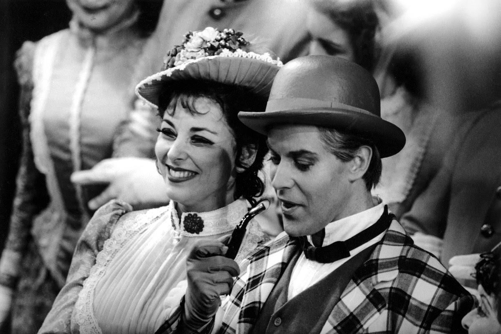

Archibald Gosvenor

Archibald Gosvenor is one of the main characters from Gilbert &
Sullivan's Patience Operetta. He is a
poet and and artist, and
is well-liked by most everyone he encounters. He falls in love with
Patience, a simple milkmaid, and is willing to do anything for her.
-
I admire Gosvenor's passion for the arts and poetry. He takes great
pride in writing poetry and sharing it with the world. As an artist,
I find his passion for the arts very inspiring.
-
I also admire the way he really cares for Patience and treats her with
much more kindess than the other characters do. In general, he is also
quite friendly and kind to other characters, which is something I find
inspiring.
-
Another thing about Gosvenor that I admire is his ability to change during
the course of the operetta. He changes his appearance and mannerisms
out of his affections for Patience. Being open to change is something I am
trying to be better at, so seeing it in a character I admire is inspiring.